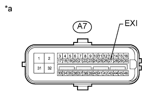

DTC C1340 Цепь блокировки межосевого дифференциала |
| Код DTC | Условие обнаружения DTC | Неисправный участок |
| C1340 | Обнаружен обрыв в цепи EXI ЭБУ системы противоскольжения. |
|
| 1.ПРОВЕРЬТЕ НАПРЯЖЕНИЕ НА КОНТАКТЕ (EXI) |
Отсоедините разъем A7 ЭБУ системы противоскольжения.
|  |
Измерьте напряжение в соответствии со значениями, приведенными в таблице.
| Контакты для подключения диагностического прибора | Положение переключателя | Заданные условия |
| A7-27 (EXI) - масса | Зажигание включено (IG) | 11 – 14 В |
| *a | Вид спереди разъема со стороны жгута проводов: (к ЭБУ системы противоскольжения) |
|
| ||||
| OK | |
| 2.СНОВА ПРОВЕРЬТЕ DTC |
Сбросьте коды DTC (Нажмите здесь).
Проверьте коды DTC (Нажмите здесь).
| Результат | Следующий шаг |
| DTC не выводится | А |
| DTC выводятся (для моделей с левосторонним рулевым управлением) | B |
| DTC выводятся (для моделей с правосторонним рулевым управлением) | C |
|
| ||||
|
| ||||
| А | ||
| ||
| 3.ПРОВЕРЬТЕ ЖГУТ ПРОВОДОВ И РАЗЪЕМ (ЭБУ СИСТЕМЫ ПРОТИВОСКОЛЬЖЕНИЯ – ЭБУ ПОЛНОГО ПРИВОДА / ПРИВОД ПЕРЕКЛЮЧЕНИЯ РАЗДАТОЧНОЙ КОРОБКИ) |
Отсоедините разъем A7 ЭБУ системы противоскольжения.
Отсоедините разъем G53 ЭБУ полного привода.
Отсоедините разъем C43 привода переключения раздаточной коробки.
Измерьте сопротивление в соответствии со значениями, приведенными в таблице ниже.
| Контакты для подключения диагностического прибора | Состояние | Заданные условия |
| A7-27 (EXI) - G53-14 (P1) | Всегда | Менее 1 Ом |
| A7-27 (EXI) - C43-9 (CDL) | Всегда | Менее 1 Ом |
| A7-27 (EXI) - масса | Всегда | 10 кОм или более |
|
| ||||
| OK | ||
| ||